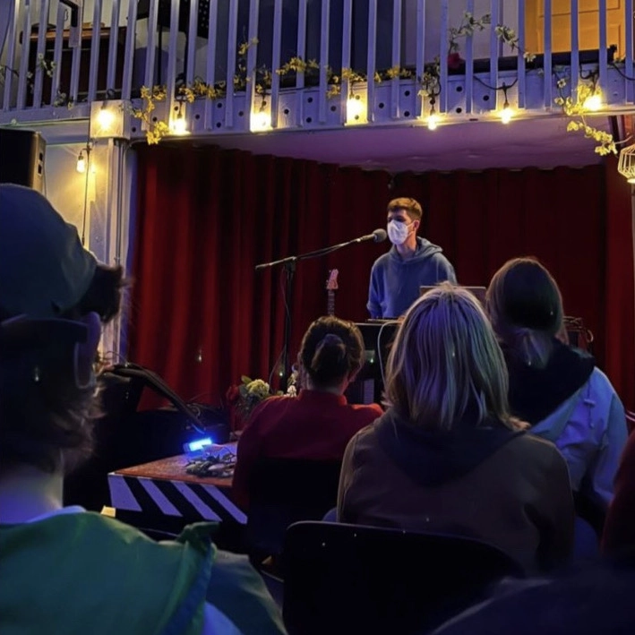

some nice pictures of me - you can download them for promo purposes



"His music has a sense of gentle awe and wonder at the things all around us as it parps its way along. It's a stroll in the park with the pots and pans of human activity." - Acid Ted
Mason Lynass is an electronic musician making generative, ambient, and IDM music in Seattle. His recent generative electronic music works explore themes of quantum listening, personal introspection, and human connection to nature and technology.
He released a full-length album, “Music for an Ordinary Day,” in May 2022, and consistently releases new singles, EPs, and music videos. Mason has performed original generative electronic music as a soloist around Seattle and hopes to expand his reach in 2023.
As an artist, Mason strives to build connections through musical improvisation and collaboration, to engage with the relentless modern world from a critical and empathic perspective, and to encourage listeners to allow time for introspection by providing opportunities to engage actively or passively with music.
send me a message: masonlynass@gmail.com